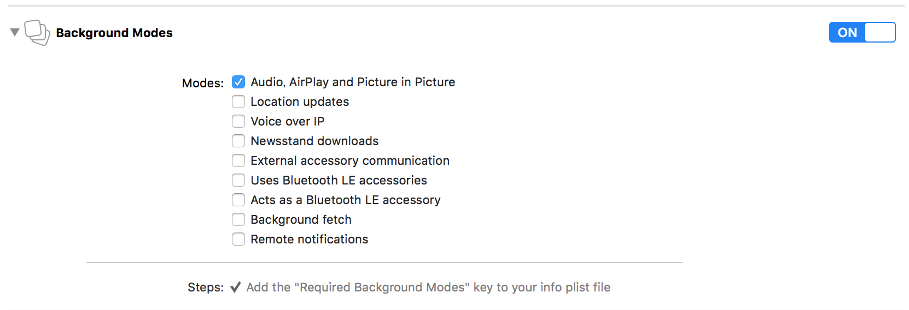
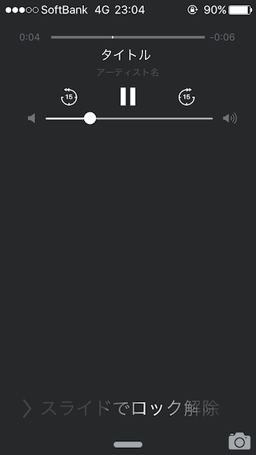

MPRemoteCommandCenterでオーディオファイル再生時のロック画面とコントロールセンターでの操作に対応する
はじめに
これはサーバーからダウンロードした音声ファイルをバックグラウンドで再生するまでの設定を行った際の備忘録です。
iOS9.2のシュミレーターを利用していたのですが、コントロールセンターでボタンが表示されない等の現象が発生してましたので実機での検証を想定しています。
環境
- Xcode7.2
- iOS9系 実機
やったこと
Background Audio&AirPlayのチェックボックスをONに
Targets名 => Capabilities => Background Modes => Audio&AirPlay

音声ファイルのパーミッションの設定
今回はAVAudioPlayerを利用して楽曲再生を行いました。
ダウンロードしてストレージに保存した音声ファイルをそのままロック画面で再生しようとすると、パーミッションの関係でAVAudioPlayer play error and the error is Code=-54 エラーが発生します。
NSFileManager.defaultManager.setAttributesで保存先のパーミッションをNSFileProtectionNoneに変更し上記のエラーに対応しました。
// 保存先ディレクトリパス取得
func exportDirectoryPath() -> String {
guard let path = NSSearchPathForDirectoriesInDomains(.DocumentDirectory, .UserDomainMask, true).first else {
fatalError()
}
return path + "/" + "Clips"
}
...省略
// 保存先ディレクトリを作成
let dirPath = DownloadFilePathAgent.exportDirectoryPath() + "/\(self.task.uuid)"
let fileManager:NSFileManager = NSFileManager.defaultManager()
do {
if fileManager.fileExistsAtPath(dirPath) {
try fileManager.removeItemAtPath(dirPath)
}
try fileManager.createDirectoryAtPath(dirPath, withIntermediateDirectories: true, attributes: nil)
// ロック時にも再生できるようにパーミッション変更
try fileManager.setAttributes([NSFileProtectionKey: NSFileProtectionNone], ofItemAtPath: dirPath)
}
catch let error as NSError {
//エラー対応
}
...省略
// ファイルダウンロード完了時にもパーミッション変更
try! NSFileManager.defaultManager().setAttributes([NSFileProtectionKey: NSFileProtectionNone], ofItemAtPath: filePath)
AVAudioSession生成時にロック画面で再生するカテゴリの指定
session = AVAudioSession.sharedInstance()
//ロック時も再生のカテゴリを指定
do {
try session?.setCategory(AVAudioSessionCategoryPlayback)
}
catch let error as NSError {
print(error.description)
}
do {
//オーディオセッションを有効化
try session?.setActive(true)
}
catch let error as NSError {
print(error.description)
}
再生ボタン等の表示設定
iOS 7.1以降はremoteControlReceivedWithEventをオーバライドしてロック画面のハンドリングに対応する方法でなくMPRemoteCommandCenterを利用するように推奨されています。
MPRemoteCommand Class Reference
AVAudioSessioを生成した再生まわりを担当するクラスに以下を実装していきます。
はじめの準備
// バックグラウンド対応しますよ 的宣言
UIApplication.sharedApplication().beginReceivingRemoteControlEvents()
// audioPlayer?play()の再生直前に呼び出して即座に再生開始するように
audioPlayer?.prepareToPlay()
表示するボタンと対応する処理の設定
let commandCenter = MPRemoteCommandCenter.sharedCommandCenter()
commandCenter.playCommand.addTarget(self, action: "play")
commandCenter.playCommand.enabled = true
commandCenter.pauseCommand.addTarget(self, action: "pause")
commandCenter.pauseCommand.enabled = true
commandCenter.skipForwardCommand.addTarget(self, action: "skipForward")
commandCenter.skipForwardCommand.enabled = true
commandCenter.skipBackwardCommand.addTarget(self, action: "skipBackward")
commandCenter.skipBackwardCommand.enabled = true
再生している楽曲情報の設定
MPNowPlayingInfoCenter.defaultCenter().nowPlayingInfo = [
MPMediaItemPropertyTitle: "タイトル",
MPMediaItemPropertyArtist : "アーティスト名",
MPNowPlayingInfoPropertyPlaybackRate : NSNumber(float: 1.0), //シークバー
MPMediaItemPropertyPlaybackDuration : NSNumber(double: self.duration)
]
再生中の電話割り込み対応
iOS 6以降はAVAudioSessionDelegateがdeprecatedになっているのでAVAudioSessionInterruptionNotificationと
AVAudioSessionRouteChangeNotificationの通知をAppDelegateで登録します。
AppDelegate#didFinishLaunchingWithOptions
// 音声再生時の電話割り込み通知登録
NSNotificationCenter.defaultCenter().addObserver(self, selector: "sessionDidInterrupt", name: AVAudioSessionInterruptionNotification, object: nil)
NSNotificationCenter.defaultCenter().addObserver(self, selector: "sessionRouteDidChange", name: AVAudioSessionRouteChangeNotification, object: nil)
/**
再生中に電話割り込み時の処理
*/
func sessionDidInterrupt() {
// 停止時の処理を呼び出す
EpisodePlayService.sharedInstance.pause()
}
/**
電話終了から再生へ復帰する処理
*/
func sessionRouteDidChange(){
// 再生開始処理を呼び出す
EpisodePlayService.sharedInstance.play()
}
仕上がり

備考
デフォルトの「ミュージック」のアプリはロック画面のシークバーの把手でコントロールできますがリファレンス等を確認してもその機能は提供されていない模様です。
MixCloudやSoundCloud等のアプリにもなかったので多分そうでしょう。